Introduction
The purpose of this report is to document State of the Ecosystem (SOE) indicator data processing. All R code used to process and visualize the following data sets is self-contained in the Rmarkdown document associated with this HTML file. To run and update data sets in this document, set the save_clean parameter in the set-up chunk to TRUE. Raw data for these indicators are available in the file directory soe/inst/extdata.
Data sets
Surface winds
These data are sourced from the NCEP North American Regional Reanalysis (NARR), extending from January 1979 to September 2018.
| Variable | Name | Units |
|---|---|---|
| Wind speed | uwnd | m sec-1 |
| Wind direction | vwnd | ° |
| Turbulent kinetic energy | tke | J kg-1 |
| Storm relative helicity | hlcy | m2sec-2 |
Variables included in these data are surface wind speed and direction (uwnd and vwnd respectively), surface turbulent kinetic energy (TKE), and storm relative helicity (HLCY). An indicator for total wind speed is calculated below as \[\textrm{TWS} = \sqrt{u^2 + v^2}\]. Data are visualized seasonally (Fall = October, November, December; Winter = January, February, March; Spring = April, May, June; Summer = July, August, September).
Filename: NCEP NARR surface wind; TKE; HLCY, monthly, 1979-2018, V1.csv
Contributor: Vincent Saba, (vincent.saba@noaa.gov)
Processing
# Read in raw data
d <- read.csv(file.path(raw.dir,"NCEP NARR surface wind; TKE; HLCY, monthly, 1979-2018, V1.csv"))
# Processing steps for all wind speed data
wind_clean1 <- d %>% gather(., Var, Value, GB.uwnd:MAB.tke) %>% #convert wide to long
dplyr::rename(Time = Month.Year) %>% #rename time variable
separate(Var, c("EPU","Var"),"\\.") %>% #separate out EPU from variable names
mutate(Time = dmy(.$Time), #Convert to date format
Units = plyr::mapvalues(Var, from = unique(Var), to = c(rep("J/kg",2),"m^2/sec^2","J/kg")), #add units
Time, season = plyr::mapvalues(month(Time), from = seq(1,12,1), #Get season
to = c(rep("winter",3),
rep("spring",3),
rep("summer",3),
rep("fall",3))))
# Calculate total wind speed from u and v components
total_wind_speed <- wind_clean1 %>%
filter(Var == "uwnd"| Var == "vwnd") %>% #select variables
spread(., Var, Value) %>% #convert to wide for calculating tws
mutate(`total wind speed` = sqrt(uwnd^2 + vwnd^2)) %>% #tws
dplyr::select(-uwnd, -vwnd) %>% #start processing back to SOE format
gather(.,Var, Value, `total wind speed`) #convert to long
wind_clean <- rbind(wind_clean1, total_wind_speed)
wind_clean <- wind_clean %>%
unite(., Var, c(Var, season), sep = " ") %>% #merge season into Var column
group_by(Time = year(Time), EPU, Var, Units) %>%
dplyr::summarise(Value = mean(Value)) %>%
as.data.frame()
if (save_clean){
save(wind_clean, file =
file.path(clean.dir, "wind_clean.Rdata"))
}MAB Total Wind Speed
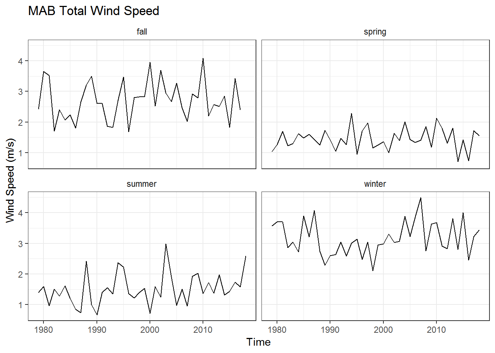
GB Total Wind Speed

GOM Total Wind Speed

MAB Helicity

GB Helicity

GOM Helicity

MAB TKE

GB TKE

GOM TKE

Slopewater proportions
Slopewater proportions give the percent total of water type observed in the deep Northeast Channel (150-200 m depth).
| Variable | Names | Units |
|---|---|---|
| Warm Slope Water proportion | WSW | unitless |
| Labrador Shelf Slope Water proportion | LSLW | unitless |
Raw data fields correspond to year, water mass flavor (WSW = Warm Slope Water, LSLW = Labrador Slope Water), and proportion of total expressed as a percentage.
Filename: slopewater_proportions.csv
Contributor: Paula Fratantoni (paula.fratantoni@noaa.gov)
Processing
d <- read.csv(file.path(raw.dir,"slopewater_proportions.csv"))
slopewater <- d %>%
dplyr::rename(Time = year, Var = water.mass.flavor, Value = prop) %>%
mutate(EPU = "GOM", Units = "unitless", Var2 = "proportion ne channel") %>%
unite(.,Var,c(Var,Var2), sep = " ")
if (save_clean){
save(slopewater, file =
file.path(clean.dir, "slopewater_proportions.Rdata"))
}Visualization
slopewater %>%
mutate(Var, Var = plyr::mapvalues(Var, from = c("WSW proportion ne channel",
"LSLW proportion ne channel"),
to = c("WSW","LSLW"))) %>%
dplyr::rename(Flavor = Var) %>%
ggplot() +
geom_line(aes(x = Time, y = Value, color = Flavor))+
geom_point(aes(x = Time, y = Value, color = Flavor)) +
ylab("Percent of Total Slopewater") +
ggtitle("Slopewater Proportions in NE Channel")+
theme_bw()+
theme(strip.background = element_blank())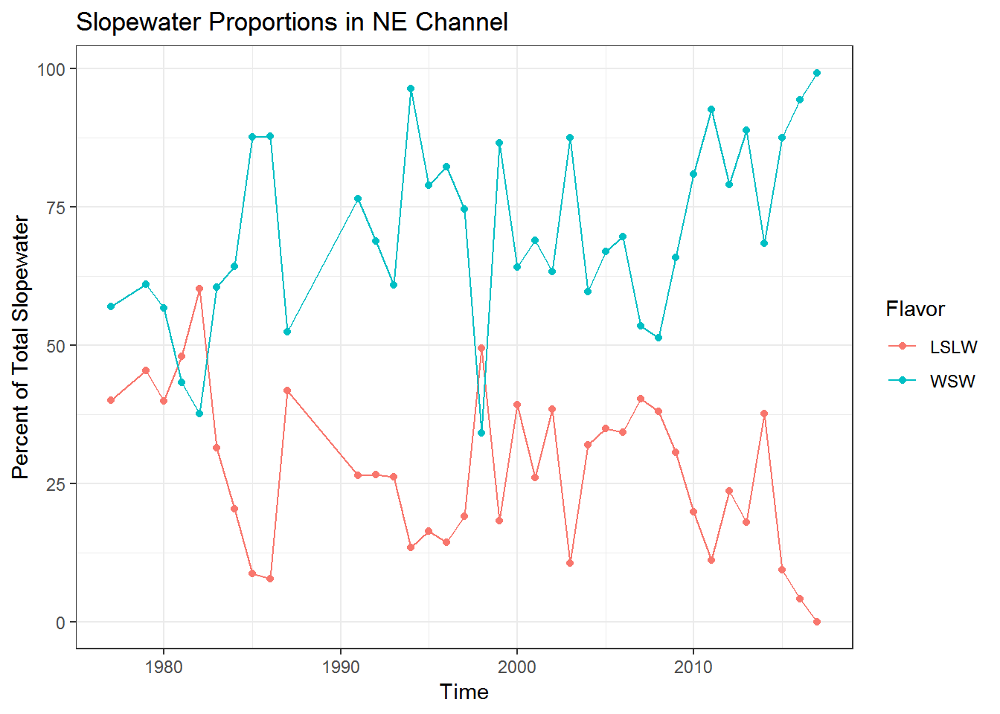
Ocean temperature anomaly (in situ)
These data include in situ regional time series of both surface and bottom water temperature anomalies on the Northeast Continental Shelf. Raw data is split into four files by EPU (SS, GOM, GB, and MAB).
| Variable | Names | Units |
|---|---|---|
| SST anomaly | Tsfc_anom | °C |
| Reference SST (1981-2010) | Tsfc_ref | °C |
| Bottom temp. anomaly | Tbot_anom | °C |
| Reference BT (1981-2010) | Tbot_ref | °C |
Filenames: EcoSS_core_Ttopbot.csv, EcoGoM_core_Ttopbot.csv, EcoGB_core_Ttopbot.csv, EcoMAB_core_Ttopbot.csv
Contributor: Paula Fratantoni (paula.fratantoni@noaa.gov)
Processing
ss <- read.csv(file.path(raw.dir,"EcoSS_core_Ttopbot.csv")) %>% mutate(EPU = "SS")
gom <- read.csv(file.path(raw.dir,"EcoGoM_core_Ttopbot.csv")) %>% mutate(EPU = "GOM")
gb <- read.csv(file.path(raw.dir,"EcoGB_core_Ttopbot.csv")) %>% mutate(EPU = "GB")
mab <- read.csv(file.path(raw.dir,"EcoMAB_core_Ttopbot.csv")) %>% mutate(EPU = "MAB")
ocean_temp_insitu <- rbind(ss, gom, gb, mab) %>% #bind all
dplyr::rename(Time = decimal.year, Var = variable.name, Value = temperature) %>% #rename
mutate(Units = "degreesC", Time = as.Date(format(date_decimal(Time), "%Y-%b-%d"), "%Y-%b-%d"),
Var, Var = plyr::mapvalues(Var, from = c("Tsfc_anom",#Rename variables
"Tsfc_ref",
"Tbot_anom",
"Tbot_ref"),
to = c("sst anomaly in situ",
"reference sst in situ (1981-2010)",
"bottom temp anomaly in situ",
"reference bt in situ (1981-2010)"))) %>%
group_by(Time = year(Time), EPU, Var, Units) %>%
dplyr::summarise(Value = mean(Value)) %>%
as.data.frame()
if (save_clean){
save(ocean_temp_insitu, file =
file.path(clean.dir, "ocean_temp_insitu.Rdata"))
}Visualization
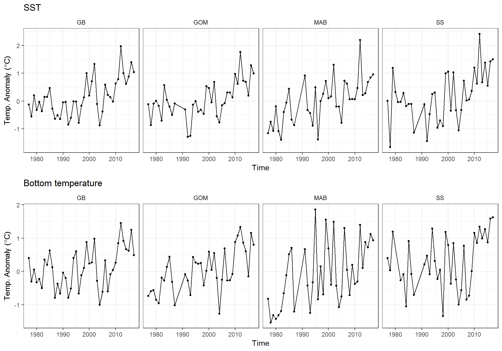
Ocean temperature (OI)
These data show NE shelf surface and bottom temperatures estimated through an optimal interpolation procedure (see methods here). Spring and fall time series were standardized to April 3 and October 11 between the period of 1968-2017. The code below first creates a downsampled raster of each Ecological Production Unit. These downsampled EPU rasters are then used to mask SST and bottom temperature data, from which annual means are computed. This same approach is used to generate time series from EcoMon zooplankton sampling and optimally interpolated salinity data.
Filename: temp_bottom_fall_spdf.Rdata, temp_bottom_spring_spdf.Rdata, temp_surface_fall_spdf.Rdata, temp_surface_spring_spdf.Rdata
Contributor: Kevin Friedland (kevin.friedland@noaa.gov)
Processing
Raster manipulation & variable selection functions
#Read in EPU shapefile (will be downsampled to match raster resolution)
epu <- readOGR(file.path(gis.dir, "EPU_Extended.shp"), verbose = F)
#Write function to build EPU rasters
build_raster <- function(EPU){
#Filter raster by EPU
epu <- epu[epu$EPU == EPU,]
#Build empty raster
r1 <- raster::raster()
e <- raster::extent(-75.950, -65.450, 35.650, 44.650)
raster::extent(r1) <- e
#fill with EPU polygon
r1 <- raster::rasterize(epu, r1, field = 1, fun = mean)
raster::crs(r1) <- NA
#create raster to resample with
r2 <- raster::raster(nrow = 90, ncol = 105)
raster::extent(r2) <- e
raster::crs(r2) <- NA
#Downsample high res EPU raster to match data
r.new <- raster::resample(r1, r2, method="bilinear")
r.new[is.finite(r.new)] <- 1
return(r.new)
}
#Raster data
mab_rast <- build_raster("MAB")
gb_rast <- build_raster("GB")
gom_rast <- build_raster("GOM")
#Process ECSA data by EPU and create time series
epu_env <- function(variable, type = NULL, season, genus = NULL, epu){
if(!is.null(type) & !variable %in% c("salinity","temperature")){
stop('type only applicable for variables "salinity" and "temperature"
as type = "bottom" or type = "surface"')
}
if(!is.null(genus) & variable != "zooplankton"){
stop('genus only applicable for variable "zooplankton"')
}
#get compiled down-sampled raster of chosen strata from shapefile.
epumask.raster <- get(paste0(tolower(epu),"_rast"))
#get bottom temp data and find mean for stock area--------------------------------------
indir <- here("static","inst","extdata","gridded")
if (variable == "salinity"){
load(file.path(indir, paste0("sal_",type,"_",season,"_spdf.rdata")))
} else if (variable == "temperature"){
load(file.path(indir, paste0("temp_",type,"_",season,"_spdf.rdata")))
} else if (variable == "chlorophyll"){
load(file.path(indir, paste0("chl_",season,"_1997-2018.rdata")))
} else if (variable == "zooplankton"){
load(file.path(indir, paste0(genus,"_",season,"_zoo_1977-2016.rdata")))
}
#create null df to fill with results
data = data.frame(array(NA,dim= c(raster::nlayers(ecsa_dat),5)))
#loops through layers in raster brick
for(i in 1:raster::nlayers(ecsa_dat)){
#load raster by year
#get file information from title
layer_id <- stringr::str_extract(names(ecsa_dat)[[i]], "\\d.*")
layer_id <- stringr::str_split(layer_id, "_")
data[i,1] <- layer_id[[1]][[1]]
data[i,2] <- layer_id[[1]][[2]]
data[i,3] <- layer_id[[1]][[3]]
#trim to stock area
masked.raster = ecsa_dat[[i]]*epumask.raster
#find mean BT of stock area
data[i,4] = raster::cellStats(masked.raster, stat='mean', na.rm=TRUE)
data[i,5] = raster::cellStats(masked.raster, stat = 'sd', na.rm=TRUE)
#
# if (layer_id[[1]][[1]] == "1995"){
# break
# }
}
x <- as.numeric(data$X1)
y.out <- data$X4
y.sd <- data$X5
sd.low <- y.out - y.sd
sd.high <- y.out + y.sd
# remove
if (variable == "zooplankton"){
if (season == "spring"){
y.out[x %in% c(1989, 1990, 1991, 1994)] <- NA
sd.low[x %in% c(1989, 1990, 1991, 1994)] <- NA
sd.high[x %in% c(1989, 1990, 1991, 1994)] <- NA
} else if (season == "fall") {
y.out[x %in% c(1989, 1990, 1992)] <- NA
sd.low[x %in% c(1989, 1990, 1992)] <- NA
sd.high[x %in% c(1989, 1990, 1992)] <- NA
}
}
if(variable == "chlorophyll"){
type <- ""
} else if (variable == "zooplankton"){
type <- genus
variable <- "zoo"
}
out <- data.frame(Var = paste(paste(type,variable),season),
Time = as.numeric(x),
Value = y.out,
sd.low = sd.low,
sd.high = sd.high,
Season = season,
epu = epu)
out <- out[out$Time > 1968,]
return(out)
}Data pull & aggregation
#Bottom temperatures
bt_fall_mab <- epu_env(variable = "temperature", type = "bottom", season = "fall", epu = "MAB")
bt_spring_mab <- epu_env(variable = "temperature", type = "bottom", season = "spring", epu = "MAB")
bt_fall_gb <- epu_env(variable = "temperature", type = "bottom", season = "fall", epu = "GB")
bt_spring_gb <- epu_env(variable = "temperature", type = "bottom", season = "spring", epu = "GB")
bt_fall_gom <- epu_env(variable = "temperature", type = "bottom", season = "fall", epu = "GOM")
bt_spring_gom <- epu_env(variable = "temperature", type = "bottom", season = "spring", epu = "GOM")
#Surface temperatures
sst_fall_mab <- epu_env(variable = "temperature", type = "surface", season = "fall", epu = "MAB")
sst_spring_mab <- epu_env(variable = "temperature", type = "surface", season = "spring", epu = "MAB")
sst_fall_gb <- epu_env(variable = "temperature", type = "surface", season = "fall", epu = "GB")
sst_spring_gb <- epu_env(variable = "temperature", type = "surface", season = "spring", epu = "GB")
sst_fall_gom <- epu_env(variable = "temperature", type = "surface", season = "fall", epu = "GOM")
sst_spring_gom <- epu_env(variable = "temperature", type = "surface", season = "spring", epu = "GOM")
bottom_temp_oi <- rbind(bt_fall_mab,
bt_spring_mab,
bt_fall_gb,
bt_spring_gb,
bt_fall_gom,
bt_spring_gom)
surface_temp_oi <- rbind(sst_fall_mab,
sst_spring_mab,
sst_fall_gb,
sst_spring_gb,
sst_fall_gom,
sst_spring_gom)
#Start with annual mean, generating sampling uncertainty for this time series is possible
bottom_temp_oi_annual <- bottom_temp_oi %>%
group_by(epu, Time) %>%
dplyr::summarise(Value = mean(Value)) %>%
dplyr::rename(EPU = epu) %>%
dplyr::mutate(Units = "degreesC", Var = "bottom temp OI")
#Same thing for annual SST
surface_temp_oi_annual <- surface_temp_oi %>%
group_by(epu, Time) %>%
dplyr::summarise(Value = mean(Value)) %>%
dplyr::rename(EPU = epu) %>%
dplyr::mutate(Units = "degreesC", Var = "surface temp OI")
ocean_temp_oi <- rbind(bottom_temp_oi_annual, surface_temp_oi_annual)
if (save_clean){
save(ocean_temp_oi,file =
file.path(clean.dir, "ocean_temp_oi.Rdata"))
}Visualization
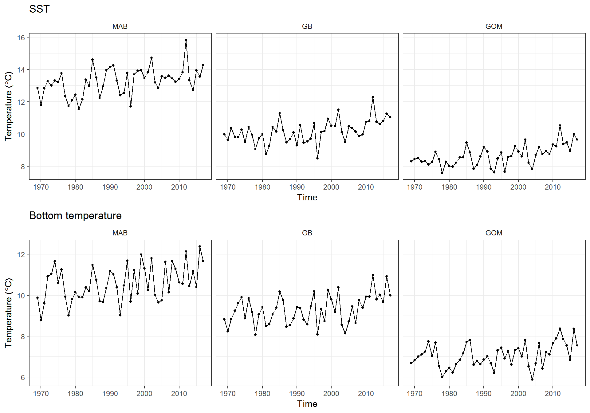
Ocean salinity anomaly (in situ)
These data include in situ regional time series of both surface and bottom salinity anomalies on the Northeast Continental Shelf. Raw data is split into four files by EPU (SS, GOM, GB, and MAB).
| Variable | Names | Units |
|---|---|---|
| Surface salinity anomaly | Ssfc_anom | PSU |
| Reference surface salinity (1981-2010) | Ssfc_ref | PSU |
| Bottom salinity anomaly | Sbot_anom | PSU |
| Reference bottom salinity (1981-2010) | Sbot_ref | PSU |
Filenames: EcoSS_core_Stopbot.csv, EcoGoM_core_Stopbot.csv, EcoGB_core_Stopbot.csv, EcoMAB_core_Stopbot.csv
Contributor: Paula Fratantoni (paula.fratantoni@noaa.gov)
Processing
ss <- read.csv(file.path(raw.dir,"EcoSS_core_Stopbot.csv")) %>% mutate(EPU = "SS")
gom <- read.csv(file.path(raw.dir,"EcoGoM_core_Stopbot.csv")) %>% mutate(EPU = "GOM")
gb <- read.csv(file.path(raw.dir,"EcoGB_core_Stopbot.csv")) %>% mutate(EPU = "GB")
mab <- read.csv(file.path(raw.dir,"EcoMAB_core_Stopbot.csv")) %>% mutate(EPU = "MAB")
ocean_sal_insitu <- rbind(ss, gom, gb, mab) %>% #bind all
dplyr::rename(Time = decimal.year, Var = variable.name, Value = salinity) %>% #rename
mutate(Units = "PSU", Time = as.Date(format(date_decimal(Time), "%Y-%b-%d"), "%Y-%b-%d"),
Var, Var = plyr::mapvalues(Var, from = c("Ssfc_anom",
"Ssfc_ref",
"Sbot_anom",
"Sbot_ref"),
to = c("surface salinity anomaly in situ",
"reference surface salinity in situ (1981-2010)",
"bottom salinity anomaly in situ",
"reference bottom salinity in situ (1981-2010)"))) %>%
group_by(Time = year(Time), EPU, Var, Units) %>%
dplyr::summarise(Value = mean(Value)) %>%
as.data.frame()
if (save_clean){
save(ocean_sal_insitu, file =
file.path(clean.dir, "ocean_sal_insitu.Rdata"))
}Visualization
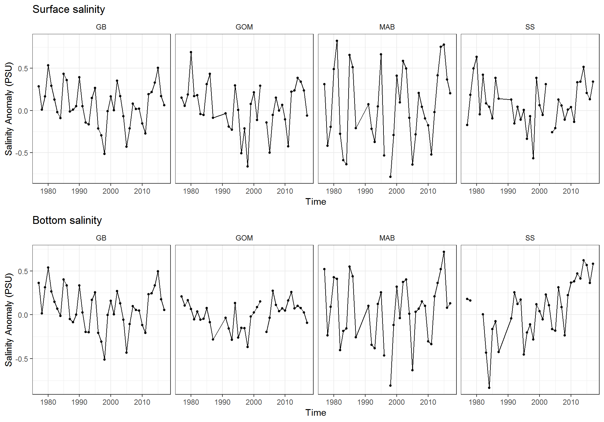
Ocean salinity (OI)
These data show optimally interpolated sea-surface and bottom salinities between 1992-2017 (methods for OI procedure are available here. Processing of these time series follows the same methods used to process optimally interpolated ocean temperatures. These data are presented as RasterStacks (i.e. one raster layer per year), which are then masked by EPU polygons for further analyses. Here we take the annual mean of masked raster layers to create a time series of OI observations.
Filename: sal_bottom_fall_spdf.Rdata, sal_bottom_spring_spdf.Rdata, sal_surface_fall_spdf.Rdata, sal_surface_spring_spdf.Rdata
Contributor: Kevin Friedland (kevin.friedland@noaa.gov)
Processing
#Bottom salinities
bsal_fall_mab <- epu_env(variable = "salinity", type = "bottom", season = "fall", epu = "MAB")
bsal_spring_mab <- epu_env(variable = "salinity", type = "bottom", season = "spring", epu = "MAB")
bsal_fall_gb <- epu_env(variable = "salinity", type = "bottom", season = "fall", epu = "GB")
bsal_spring_gb <- epu_env(variable = "salinity", type = "bottom", season = "spring", epu = "GB")
bsal_fall_gom <- epu_env(variable = "salinity", type = "bottom", season = "fall", epu = "GOM")
bsal_spring_gom <- epu_env(variable = "salinity", type = "bottom", season = "spring", epu = "GOM")
#Surface salinities
ssal_fall_mab <- epu_env(variable = "salinity", type = "surface", season = "fall", epu = "MAB")
ssal_spring_mab <- epu_env(variable = "salinity", type = "surface", season = "spring", epu = "MAB")
ssal_fall_gb <- epu_env(variable = "salinity", type = "surface", season = "fall", epu = "GB")
ssal_spring_gb <- epu_env(variable = "salinity", type = "surface", season = "spring", epu = "GB")
ssal_fall_gom <- epu_env(variable = "salinity", type = "surface", season = "fall", epu = "GOM")
ssal_spring_gom <- epu_env(variable = "salinity", type = "surface", season = "spring", epu = "GOM")
bottom_sal_oi <- rbind(bsal_fall_mab,
bsal_spring_mab,
bsal_fall_gb,
bsal_spring_gb,
bsal_fall_gom,
bsal_spring_gom)
surface_sal_oi <- rbind(ssal_fall_mab,
ssal_spring_mab,
ssal_fall_gb,
ssal_spring_gb,
ssal_fall_gom,
ssal_spring_gom)
#Start with annual mean, generating sampling uncertainty for this time series is possible
bottom_sal_oi_annual <- bottom_sal_oi %>%
group_by(epu, Time) %>%
dplyr::summarise(Value = mean(Value)) %>%
dplyr::rename(EPU = epu) %>%
dplyr::mutate(Units = "PSU", Var = "bottom sal OI")
#Same thing for annual salinity
surface_sal_oi_annual <- surface_sal_oi %>%
group_by(epu, Time) %>%
dplyr::summarise(Value = mean(Value)) %>%
dplyr::rename(EPU = epu) %>%
dplyr::mutate(Units = "PSU", Var = "surface sal OI")
ocean_sal_oi <- rbind(bottom_sal_oi_annual, surface_sal_oi_annual)
if (save_clean){
save(ocean_sal_oi,file =
file.path(clean.dir, "ocean_sal_oi.Rdata"))
}Visualization
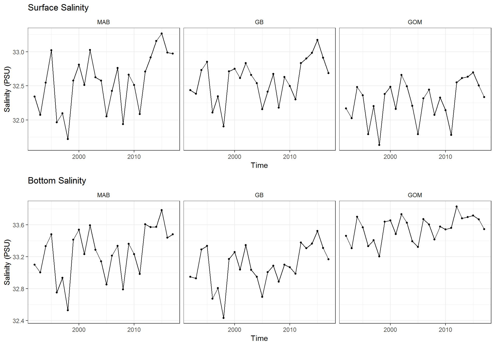
Stratification
These data are time series of average stratification (0-50 m depth) by EPU.
Filename: Strat50.csv
Contributor: Paula Fratantoni (paula.fratantoni@noaa.gov)
| Variable | Names | Units |
|---|---|---|
| stratification | stratification | kg m -3 |
Processing
strat <- read.csv(file.path(raw.dir, "Strat50.csv"), stringsAsFactors = FALSE)
stratification <- strat %>%
dplyr::rename(Time = time, Var = var, Value = stratification) %>%
separate(., Var, c("Var","EPU"), sep = "_") %>%
mutate(Var = "stratification (0-50 m)",
Units = "kg m^-3")
if (save_clean){
save(stratification, file = file.path(clean.dir, "stratification.Rdata"))
}Visualization
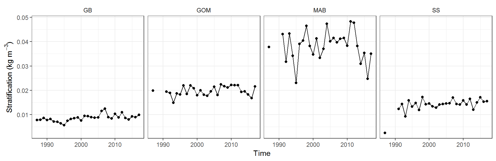
EcoMon nutrient data
These data include nutrient concentrations, temperature, salinity, density, and dissolved oxygen data sampled via CTD profiles on Ecosystem Monitoring (EcoMon) cruises between 11/3/2009 - 10/19/2016. More metadata are available here.| Variable | Names | Units |
|---|---|---|
| Cruise identifier | EXPOCODE | |
| Cruise identifier | Cruise_ID | |
| Station number | STNNBR | |
| CTD cast number | CASTNO | |
| Sample bottle number | BTLNBR | |
| Sample date | Date_UTC | MM/DD/YYYY |
| Sample time | Time_UTC | hh:mm |
| Latitude | Latitude | decimal degrees |
| Longitude | Longitude | decimal degrees |
| Depth of station | Depth_station | m |
| Depth of sample | Depth_sampling | m |
| Water pressure | CTDPRS | decibars |
| Water temperature | CTDTEMP | °C |
| Water salinity | CTDSAL | PSS-78 |
| Potential density at surface pressure | Sigma.Theta | kg m-3 |
| Dissolved oxygen | CTDOXY | mg L-1 |
| Silicic acid concentration | SILCAT | \(\mu\)M |
| Total nitrate and nitrite concentration | NITRIT+NITRAT | \(\mu\)M |
| Ammonia concentration | AMMMONIA | \(\mu\)M |
| Phosphate concentration | PHSPHT | \(\mu\)M |
| Dissolved oxygen | CTDOXYMOL | \(\mu\)mol kg-1 |
Filename: EcoMon Nutrient Data Through June 2018.csv
Contributor: Chris Melrose (chris.melrose@noaa.gov)
Processing
d <- read.csv(file.path(raw.dir,"EcoMon Nutrient Data Through June 2018.csv"), stringsAsFactors = FALSE)
#Create data frame for mapping units to variable names
mapping <- data.frame(Units = as.character(d[1,]),
Var = as.character(names(d)))
mapping[mapping$Units == "" | mapping$Units == "NA",]$Units <- NA
#remove row with units
d <- slice(d,-1)
d1 <- d %>%
mutate(Time = Date_UTC) %>% #create Time variable
dplyr::select(-Date_UTC,-Time_UTC) %>% #remove time, date
gather(., Var, Value, -Latitude, -Longitude, -Time, -Depth_sampling, -Depth_station) %>% #turn wide to long while retaining lat/lon
filter(!is.na(Value)) %>% #remove NA
left_join(., mapping, by = c("Var")) %>% #join units
mutate(Longitude = as.numeric(Longitude),
Latitude = as.numeric(Latitude),
Time = mdy(Time)) %>%
filter(Latitude > 32, Latitude<50)
#Sanity check
# t1 <- d1[d1$Var == "CTDOXYMOL" ,]$Value
# t <- d %>% slice(.,-1)
# t <- as.character(t$CTDOXYMOL)
# all(t == t1)
#Read in EPU shapefile
epu <- readOGR(file.path(gis.dir, "EPU_Extended.shp"), verbose = F)
epu <- as(epu, "sf") #convert to sf object
if(spatial_processing){
#Test maps
#All EPUs
#ggplot() + geom_sf(data = epu)
#Scotian shelf
# ss <- epu %>% filter(EPU == "SS")
# ggplot() + geom_sf(data = ss)
#get latitude and longitude for creating SpatialPointsDataFrame
lat <- as.numeric(d$Latitude)
lon <- as.numeric(d$Longitude)
coords <- data.frame(lon = lon,lat = lat)
#create spdf
spdf <- SpatialPointsDataFrame(coords = coords, data = coords,
proj4string = CRS(crs))
#convert to sf
coords_sf <- st_as_sf(spdf)
#get intersection for mapping EPUs back to nutrient data
epu_intersect <- st_intersection(epu, coords_sf)
#plot(epu_intersect[epu_intersect$EPU == "MAB",])
#Map back to nutrient data frame
epu_df <- data.frame(Longitude = epu_intersect$lon,
Latitude = epu_intersect$lat,
EPU = epu_intersect$EPU)
#join
NE_LME_nutrients <- d1 %>%
left_join(.,epu_df, by = c("Latitude","Longitude"))
#Select data for plotting
Nitr <- NE_LME_nutrients %>% filter(Var == "NITRIT.NITRAT")
#Back to SOE format and specify bottom, mid-water, or surface sampling
NE_LME_nutrients <- NE_LME_nutrients %>%
dplyr::select(-Latitude, -Longitude) %>%
mutate(Value = as.numeric(Value),
Depth_station = as.numeric(Depth_station),
Depth_sampling = as.numeric(Depth_sampling)) %>%
mutate(bot_dif = Depth_station-Depth_sampling) %>%
mutate(surf_bot = ifelse(bot_dif <= 10, "bottom",
ifelse(bot_dif > 10 & Depth_sampling <= 5, "surface", "mid-water"))) %>%
filter(Value > 0, !is.na(EPU), !Var %in% c("BTLNBR","CASTNO","Depth_sampling",
"Depth_station","STNNBR")) %>%
mutate(Var = paste(Var, surf_bot)) %>%
dplyr::select(Time, Var, Value, Units, EPU) %>%
group_by(EPU, Time = year(Time), Var, Units) %>%
dplyr::summarise(Value = mean(Value, na.rm = TRUE)) %>%
as.data.frame()
if (save_clean){
save(NE_LME_nutrients,file = file.path(clean.dir, "EcoMon_nutrients.Rdata"))
}
} else {
load(file.path(sample.dir,"sample_nutrients.Rdata"))
load(file.path(clean.dir,"EcoMon_nutrients.Rdata"))
}QA
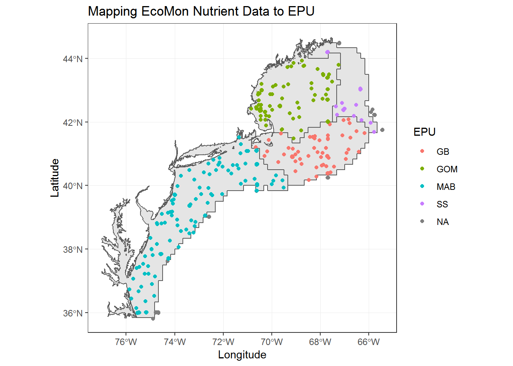
Surface Nutrients
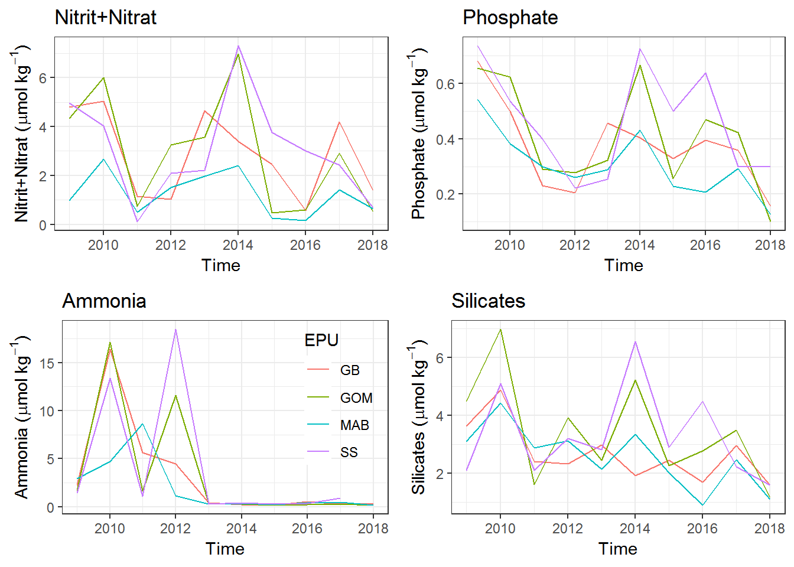
Bottom Nutrients
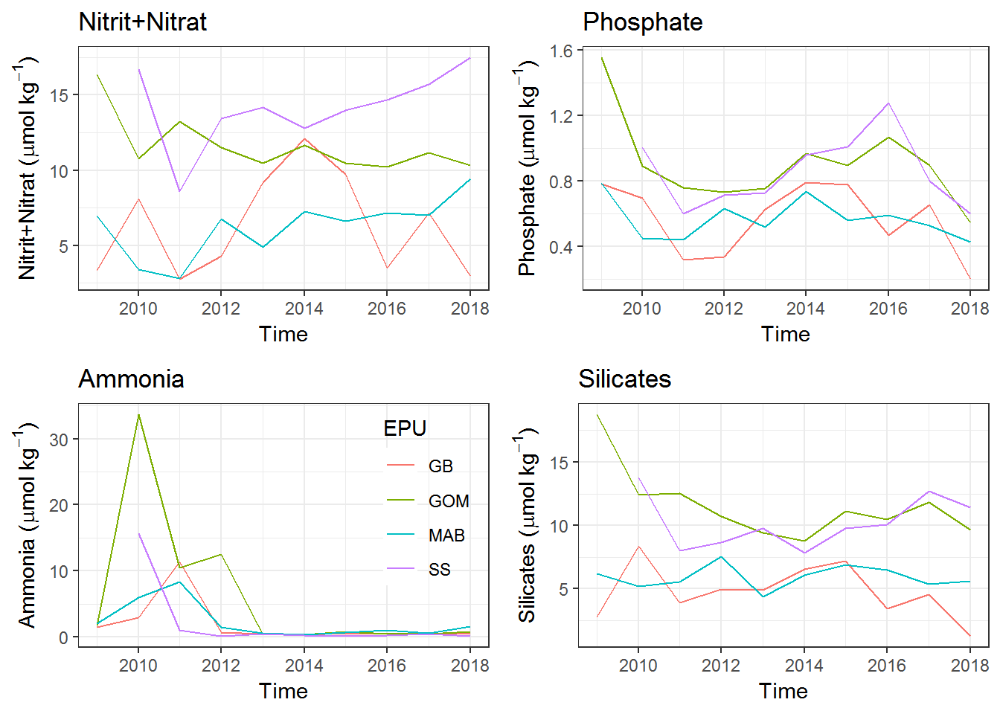
North Atlantic Oscillation (NAO)
North Atlantic Oscillation data were taken from the NOAA NWS Climate Prediction Center. These data show the monthly NAO index time series beginning in 1950 and ending in October 2018. The index is standardized to the 1981-2010 reference period. More information regarding the methodology involved in deriving the NAO and its significance is available here.
Processing
d <- read.csv(file.path(raw.dir, "NAO_index_1950-Oct2018.csv")) %>% slice(.,-826:-825)
#Three month running average
nao_cpc <- d %>%
mutate(Time = paste0(YEAR,":Q",rep(1:4, each = 3))) %>%
group_by(Time) %>%
dplyr::summarise(Value = mean(INDEX)) %>%
mutate(Var = "nao index", units = "unitless", EPU = "all",
Time = yq(Time))
#annual average
nao_annual <- d %>%
group_by(YEAR) %>%
dplyr::summarise(Value = mean(INDEX),
Variance = var(INDEX)) %>%
mutate(Var = "nao index", Units = "unitless", EPU = "all") %>%
dplyr::rename(Time = YEAR)
if (save_clean){
nao <- nao_annual %>% select(-Variance)
save(nao, file = file.path(clean.dir, "nao_annual.Rdata"))
}NAO index and index variance (Annual)
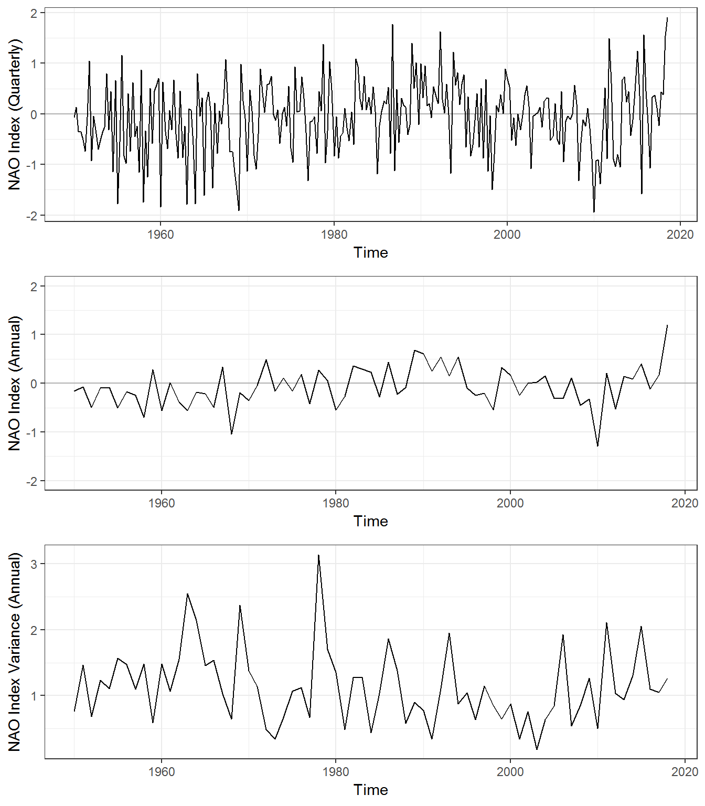
Synthesis
Visualize Series & Build Correlation Matrices
Visualization App
Methods
The purpose of this application is for users to familiarize themselves with available indicator data sets. Biases introduced by small sample sizes are not considered in the correlation matrices, and so these visualizations should only be considered an exploratory analysis.
To create correlation matrices, we first developed a function (shown below) to normalize and assess each time series for stationarity using the Augmented Dickey Fuller (ADF) test. If a time series were found to be non-stationary, we applied a first-order differencing step before assessing for stationarity again. If upon the second ADF test the series was still shown to be non-stationarity, it was not included in further correlation analyses rather than applying higher order differencing. This step was taken to prevent over-differencing of series. Group structure in correlation matrices was defined by the magnitude of the scaled and centered first principal component.
#Normalization and differencing function
get_dat <- function(field){
#Split out data
time <- env[env$Var == field,]$Time
end <- max(time)
time <- time[1:which(time == end)]
Value <- env[env$Var == field,]$Value
if (all(is.na(as.numeric(Value))) | sd(Value, na.rm = T) == 0){
Value <- NA #Assign as NA if not including
} else {
Value <- Value[1:length(time)]
Value <- (Value-mean(Value, na.rm = TRUE))/sd(Value, na.rm = TRUE) #normalize
#interpolate missing values
if (any(is.na(Value))){
Value <- approx(time, Value, n = length(Value))$y
}
#test for stationarity with Augmented Dickey Fuller
adf <- suppressWarnings(adf.test(Value)$p.value)
if (adf > 0.05){ #if non-stationary take first difference and use residuals
mod <- arima(Value, order = c(0,1,0))
Value <- resid(mod)
adf2 <- suppressWarnings(adf.test(Value)$p.value) #check again for stationarity
if (adf2 > 0.05){
Value <- NA #if still non-stationary, make NA for exclusion
}
}
}
out <- data.frame(var = field,
value = as.numeric(Value),
time = time)
return(out)
}